片语 Studio 使用说明
让每一句话，找到它的位置。
把讲话变成带字幕的成片。请按顺序读：先跑通主线，再认界面，菜单当词典查。
v7.0.0内部使用不对外分发
读完你能：
- 独立完成 导入 → 识别 → 选风格 → 导出
- 查清顶栏每一个菜单项
- 说清版权与分发边界
1. 开始之前
- 系统：Windows 10 / 11
- 解压到尽量纯英文路径
- 有 NVIDIA 显卡识别更快
- 日常启动：
CUTORA.bat
注意：本包装为内部使用，请勿对外转发。详见 §6。
2. 五分钟上手
最短主线：① 导入 → ② 重新识别 → ③ 选风格 → ④ 导出
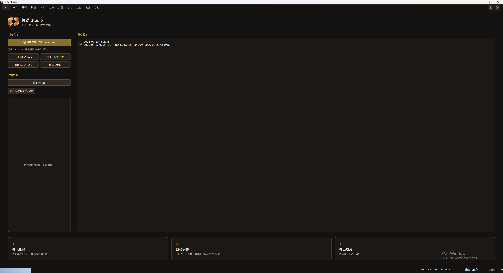
- 导入 — 新建项目或
Ctrl+I。 - 重新识别 — 点 ②，选语言。
- 选风格 — 点 ③，细调在检查器。
- 导出 — 点 ④ 或
Ctrl+E；保存Ctrl+S。
主线跑通后，再往下认界面和查菜单即可。
3. 主界面地图

| 区域 | 名称 | 做什么 |
|---|---|---|
| 顶 | 菜单栏 | 文件 … 帮助 |
| 顶 | 快捷步骤 | ①导入 · ②重新识别 · ③选风格 · ④导出 |
| 左 | 素材栏 | 媒体库 / 字幕 / 资产 / 贴纸 / 转场 |
| 中 | 预览 | 画布与字幕 |
| 右 | 检查器 | 风格、样式、属性 |
| 下 | 时间线 | 多轨与播放头 |
4. 顶栏菜单词典
需要时再查。
4.1 文件
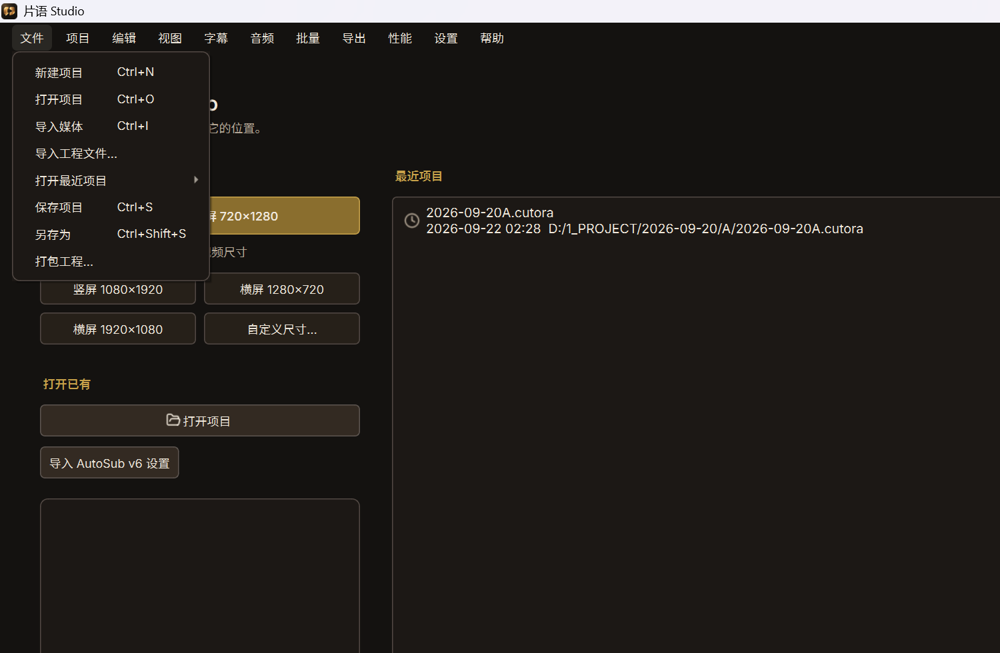
| 菜单项 | 快捷键 | 作用 |
|---|---|---|
| 新建项目 | Ctrl+N | 新建空白工程，可选手竖屏 / 横屏 / 方形画布。 |
| 打开项目 | Ctrl+O | 打开 .cutora 工程（兼容旧版 .asproj）。 |
| 导入媒体 | Ctrl+I | 把视频加入媒体库与时间线。 |
| 导入工程文件… | — | 把其它工程的视频和字幕合并进当前工程。 |
| 打开最近项目 | — | 子菜单列出近期工程。 |
| 保存项目 | Ctrl+S | 保存为 .cutora。 |
| 另存为 | Ctrl+Shift+S | 换路径另存。 |
| 打包工程… | — | 工程与素材打成包，方便换机继续做。 |
4.2 项目
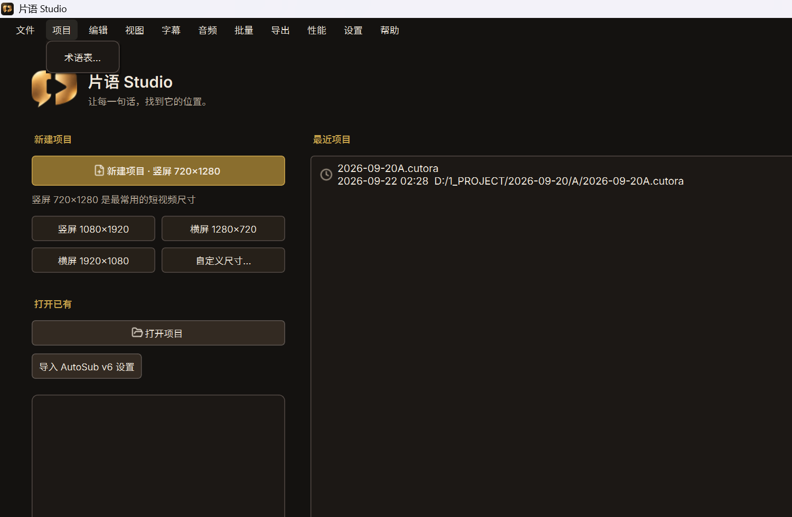
| 菜单项 | 快捷键 | 作用 |
|---|---|---|
| 术语表… | — | 维护专有名词，识别时更易写对品牌名、人名。 |
4.3 编辑
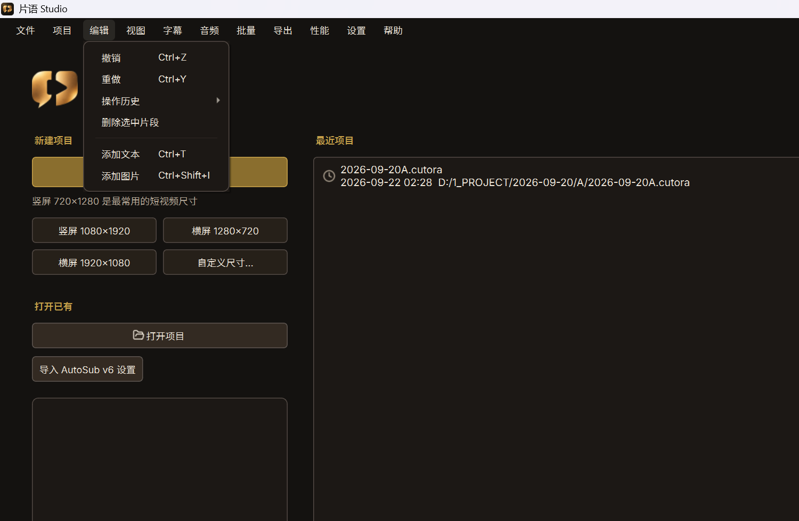
| 菜单项 | 快捷键 | 作用 |
|---|---|---|
| 撤销 | Ctrl+Z | 撤销上一步。 |
| 重做 | Ctrl+Y | 重做已撤销的操作。 |
| 操作历史 | — | 可跳转的历史步骤列表。 |
| 删除选中片段 | — | 删除时间线选中片段。 |
| 添加文本 | Ctrl+T | 添加文本层。 |
| 添加图片 | Ctrl+Shift+I | 添加图片层。 |
4.4 视图
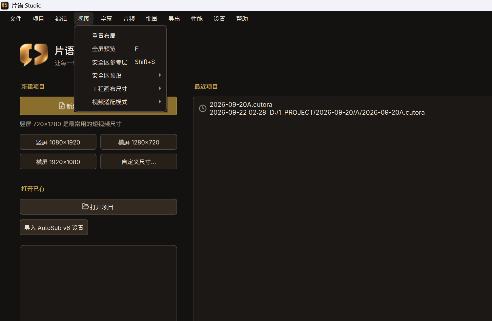
| 菜单项 | 快捷键 | 作用 |
|---|---|---|
| 重置布局 | — | 停靠栏与预览恢复默认排布。 |
| 全屏预览 | F | 预览全屏；再按 F 退出。 |
| 安全区参考层 | — | 开关安全区参考线（平台参考值）。 |
| 安全区预设 | — | 选择不同平台安全区预设。 |
| 工程画布尺寸 | — | 竖屏 / 横屏 / 方形或自定义。 |
| 视频适配模式 | — | 适应 / 裁切 / 拉伸。 |
4.5 字幕
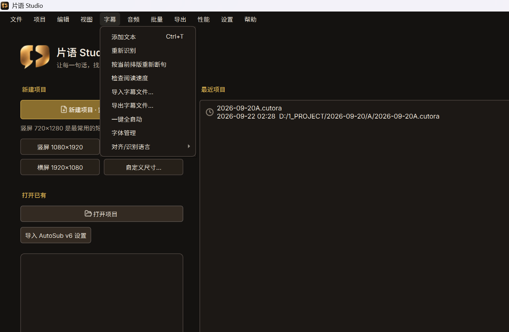
| 菜单项 | 快捷键 | 作用 |
|---|---|---|
| 添加文本 | Ctrl+T | 添加文本层。 |
| 重新识别 | — | 重新语音识别并对齐，生成字幕。 |
| 按当前排版重新断句 | — | 不重听写，只按当前样式重断句。 |
| 检查阅读速度 | — | 检查字幕是否过快（CPS）。 |
| 导入字幕文件… | — | 导入外部字幕。 |
| 导出字幕文件… | — | 导出当前字幕。 |
| 一键全自动 | — | 按当前设置自动跑识别等相关步骤。 |
| 字体管理 | — | 管理可用字体。 |
| 对齐/识别语言 | — | 选择识别与对齐语言。 |
4.6 音频
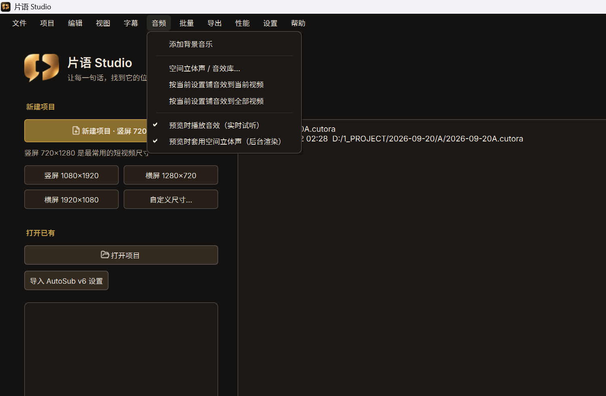
| 菜单项 | 快捷键 | 作用 |
|---|---|---|
| 添加背景音乐 | — | 添加 BGM。 |
| 空间立体声 / 音效库... | — | 打开空间声与音效库。 |
| 按当前设置铺音效到当前视频 | — | 音效设置应用到当前视频。 |
| 按当前设置铺音效到全部视频 | — | 应用到全部视频。 |
| 预览时播放音效（实时试听） | — | 预览是否实时听音效。 |
| 预览时套用空间立体声（后台渲染） | — | 预览是否后台渲染空间声。 |
4.7 批量
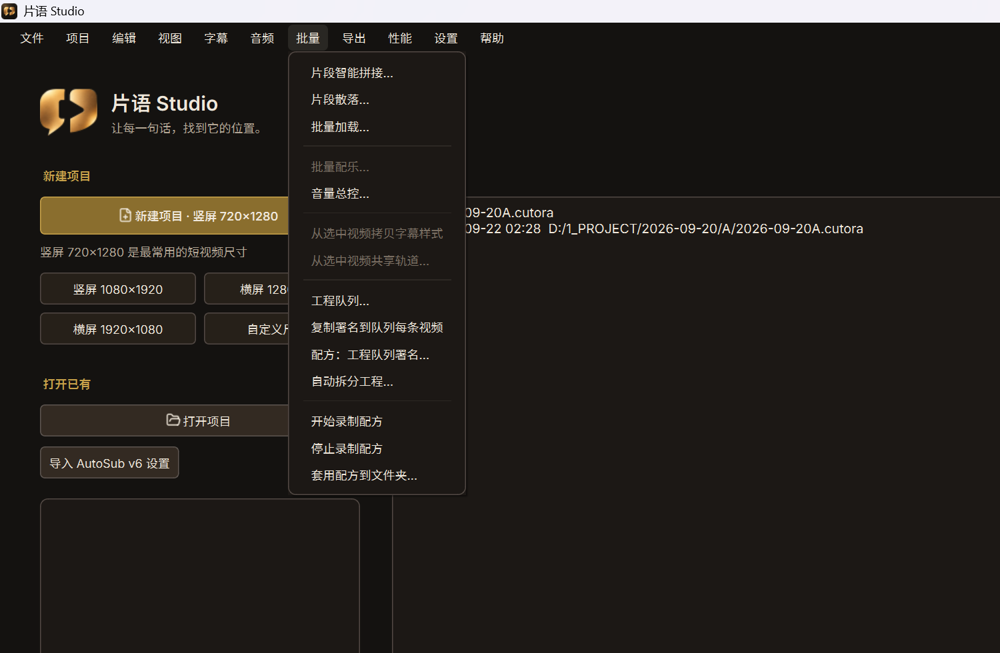
| 菜单项 | 快捷键 | 作用 |
|---|---|---|
| 片段智能拼接… | — | 多段口播按文案对齐拼接。 |
| 片段散落… | — | 短 B-roll 撒到上层轨道。 |
| 批量加载… | — | 一次加载多条素材。 |
| 批量配乐… | — | 批量分配 BGM。 |
| 音量总控… | — | 统一人声 / BGM 音量关系。 |
| 从选中视频拷贝字幕样式 | — | 拷贝字幕样式到其它视频。 |
| 从选中视频共享轨道… | — | 共享轨道配置。 |
| 工程队列… | — | 管理待处理工程队列。 |
| 复制署名到队列每条视频 | — | 署名复制到队列每条。 |
| 配方：工程队列署名… | — | 用配方批处理队列署名。 |
| 自动拆分工程… | — | 按规则拆成多个小工程。 |
| 开始录制配方 | — | 开始记录操作。 |
| 停止录制配方 | — | 结束录制。 |
| 套用配方到文件夹… | — | 配方应用到文件夹内工程。 |
4.8 导出
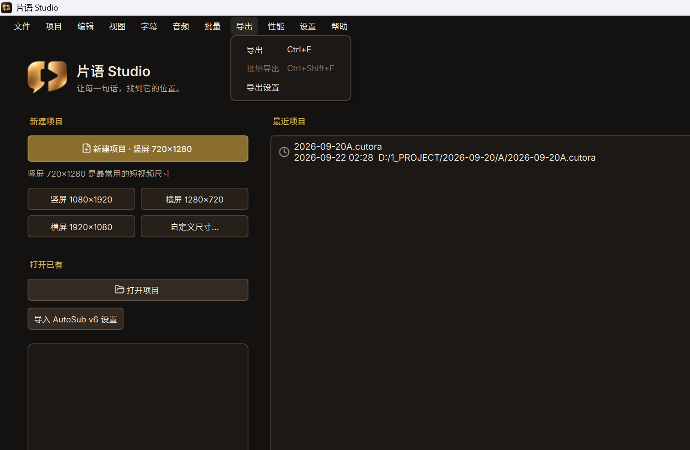
| 菜单项 | 快捷键 | 作用 |
|---|---|---|
| 导出 | Ctrl+E | 导出当前成片。 |
| 批量导出 | Ctrl+Shift+E | 一次导出多条。 |
| 导出设置 | — | 分辨率、码率、格式等。 |
4.9 性能
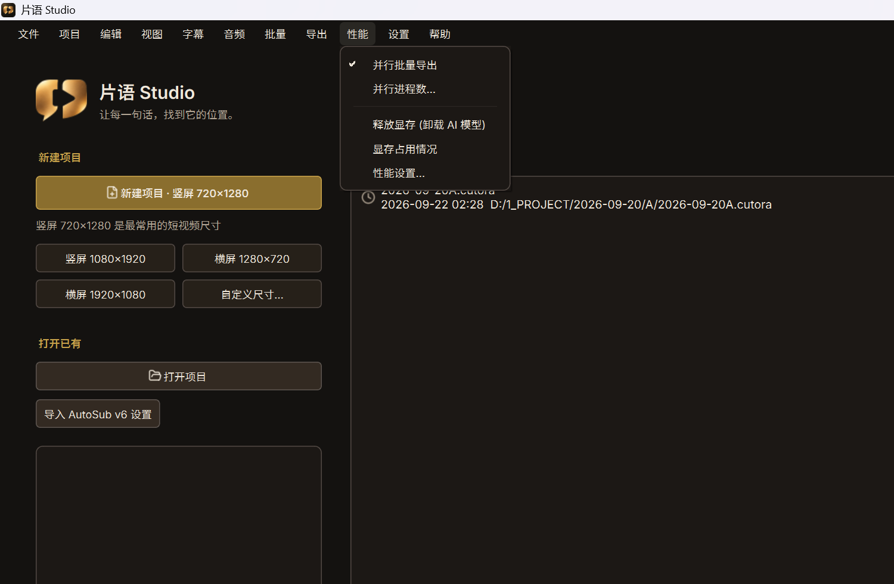
| 菜单项 | 快捷键 | 作用 |
|---|---|---|
| 并行批量导出 | — | 是否多进程并行导出。 |
| 并行进程数... | — | 设置并行进程数。 |
| 释放显存 (卸载 AI 模型) | — | 卸载识别等模型，腾出显存。 |
| 显存占用情况 | — | 查看显存摘要。 |
| 性能设置… | — | 打开设置中的性能页。 |
4.10 设置
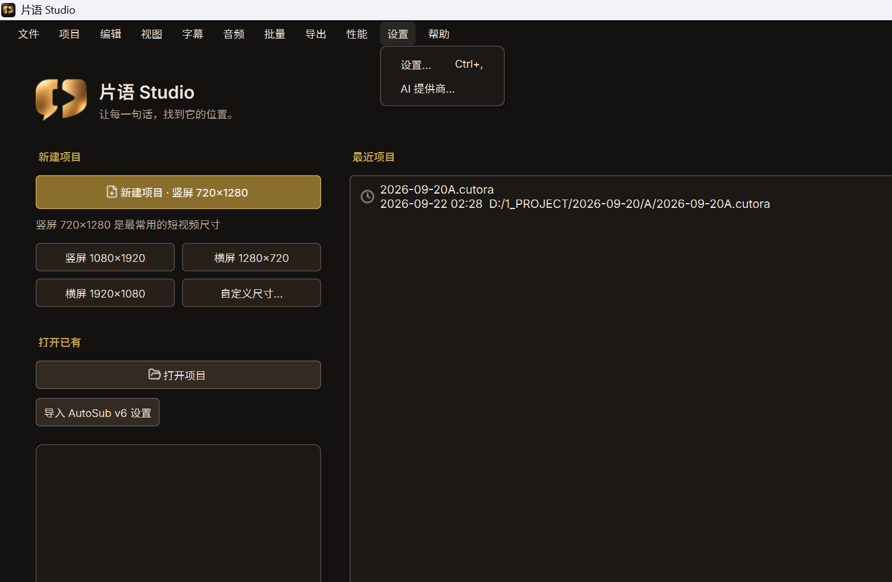
| 菜单项 | 快捷键 | 作用 |
|---|---|---|
| 设置… | Ctrl+, | 语言、路径、性能、外观等。 |
| AI 提供商... | — | 配置 AI / 识别相关提供方。 |
4.11 帮助
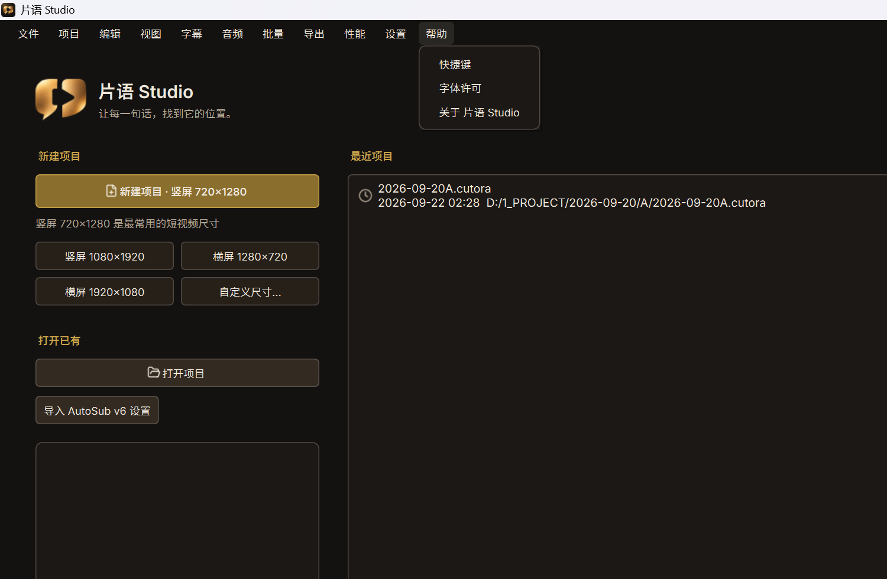
| 菜单项 | 快捷键 | 作用 |
|---|---|---|
| 快捷键 | — | 快捷键一览。 |
| 字体许可 | — | 捆绑字体许可说明。 |
| 关于 片语 Studio | — | 版本与第三方授权入口。 |
5. 进阶生产能力
片段智能拼接 — 批量 → 片段智能拼接…
片段散落 — 批量 → 片段散落…
分屏 / 转场 / 调色 / 关键帧 — 检查器与左侧转场库
6. 版权、许可与分发
| 项 | 内容 |
|---|---|
| 显示名称 | 片语 Studio |
| 工程名 | CUTORA |
| 版本 | 7.0.0 |
分发范围：
INTERNAL_USE.txt 写明「内部使用，不对外分发」。勿将安装包发到公网或未授权外部人员。- 源码许可：GPL-3.0-or-later
- 第三方：
THIRD_PARTY.md；应用内帮助 → 关于 → 第三方授权 - 字体：帮助 → 字体许可
- 内部使用 ≠ 可对外整包再分发
7. 快捷键与故障速查
| 快捷键 | 作用 |
|---|---|
Ctrl+I | 导入媒体 |
Ctrl+E | 导出 |
F | 全屏预览 |
Ctrl+, | 设置 |
| 现象 | 可先试 |
|---|---|
| 识别很慢 | 查驱动；性能 → 显存占用 |
| 显存紧张 | 性能 → 释放显存 |
| 布局弄乱 | 视图 → 重置布局 |